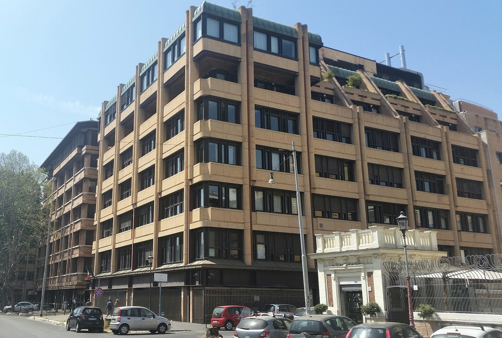

Perché conta: con Wall Street chiusa per il Labor Day americano, Piazza Affari ha dovuto muoversi da sola. Il risultato è una seduta positiva ma nervosa: TIM perde quasi il 4% in un solo giorno, mentre le banche soffrono perché la BCE si avvicina a un possibile rialzo dei tassi che eroderebbe i margini sui prestiti.
Lunedì 7 settembre 2026 è il Labor Day negli Stati Uniti — la festa del lavoro americana — e le borse di New York restano chiuse. Con meno volumi e senza il "termometro" americano a fare da riferimento, le borse europee si muovono in ordine sparso. Il FTSE MIB, l'indice principale di Piazza Affari, chiude la seduta a 52.229 punti, segnando un rialzo contenuto del +0,25%. I volumi scendono a 2,21 miliardi di euro, rispetto ai 2,64 miliardi del venerdì precedente.
La seduta è stata caratterizzata da movimenti opposti: da un lato i titoli del lusso e delle infrastrutture che corrono, dall'altro le banche e le telecomunicazioni che cedono terreno in un contesto di tassi in salita e operazioni societarie complesse.
I numeri della seduta
| Titolo / Indice | Prezzo / Livello | Variazione giornaliera |
|---|---|---|
| FTSE MIB | 52.229 punti | +0,25% |
| TIM (Telecom Italia) | 7,474 euro | −3,56% |
| Moncler | — | +0,79% |
| Prysmian | 124,20 euro | +1,60% |
| UniCredit | — | in calo |
| Mediobanca | — | in calo |
| Banca MPS | — | in calo |
TIM: perché il titolo scende quando Poste rilancia
Il caso più discusso della seduta è TIM (Telecom Italia), che perde −3,56% a 7,474 euro. In teoria, un'offerta a un prezzo più alto dovrebbe far salire il titolo. In pratica, il mercato è più diffidente.
Poste Italiane ha incrementato di 30 centesimi la componente cash della sua offerta su TIM, portando il corrispettivo totale a 1,97 euro in contanti più 0,218 azioni ordinarie Poste di nuova emissione per ogni azione TIM. La domanda che si pone il mercato è: perché Poste ha bisogno di rilanciare? Un rilancio dell'offerta spesso segnala che i precedenti termini non erano abbastanza convincenti — e che il deal è più difficile da chiudere del previsto. Anche le azioni Poste cedono in parallelo, segno di un mercato scettico sull'operazione.
💡 Impara: OPA (Offerta Pubblica di Acquisto) e OPS (Offerta Pubblica di Scambio)
Un'OPA (Offerta Pubblica di Acquisto) è quando un'azienda offre di comprare le azioni di un'altra pagando in contanti. Un'OPS (Offerta Pubblica di Scambio) prevede invece il pagamento con azioni proprie. L'offerta di Poste su TIM è mista: una parte in cash (1,97 euro) e una parte in azioni Poste (0,218 azioni per ogni azione TIM). Quando l'acquirente rilancia l'offerta — come ha fatto Poste — di solito significa che l'offerta originale non ha convinto abbastanza azionisti ad aderire. Il mercato interpreta il rilancio come un segnale di difficoltà nella chiusura dell'operazione.
Il lusso e le infrastrutture corrono
Sul fronte opposto, Moncler sale +0,79% dopo che gli analisti di Rothschild Redburn hanno aggiornato il rating sul titolo da neutral (neutrale) a buy (acquistare), alzando contestualmente il target price (prezzo obiettivo) da 54 a 56 euro. Nel settore delle infrastrutture, Prysmian — il gigante mondiale dei cavi ad alta tensione — avanza +1,60% a 124,20 euro, trainato dalla domanda strutturale di reti elettriche per la transizione energetica.
Le banche soffrono: la BCE è la variabile chiave
Il comparto bancario è il grande perdente della seduta. Mediobanca, Banca MPS, UniCredit e Intesa Sanpaolo chiudono tutte in territorio negativo. In forte ribasso anche BPER Banca e Banca Popolare di Sondrio.
La ragione sta nell'inflazione e nelle aspettative sui tassi. I mercati monetari stanno prezzando quasi integralmente un rialzo di 25 punti base (0,25%) da parte della BCE (Banca Centrale Europea) nella prossima riunione. L'inflazione dell'eurozona ad agosto è salita al 3,3%, con la componente energetica che ha registrato un boom del +14,3%.
💡 Impara: Perché i tassi alti pesano sulle banche
Il ragionamento sembra controintuitivo: le banche guadagnano di più quando i tassi sono alti, perché prestano denaro a interessi più elevati. È vero in parte. Il problema è che tassi alti aumentano anche il rischio che i clienti non riescano a restituire i prestiti (crediti deteriorati o NPL — Non Performing Loans). Inoltre, tassi più alti rallentano l'economia, riducendo la domanda di nuovi mutui e finanziamenti. E in un sistema già stressato dalla geopolitica e dall'inflazione energetica, gli investitori preferiscono alleggerire il rischio bancario in anticipo.
| Contesto macro europeo | Dato |
|---|---|
| Inflazione eurozona agosto 2026 | 3,3% |
| Componente energetica inflazione agosto | +14,3% |
| Probabilità rialzo BCE +25 pb | quasi piena |
| Volumi FTSE MIB 7 settembre | 2,21 miliardi di euro |
📌 Cosa monitorare
La prossima seduta di Piazza Affari (martedì 8 settembre) si aprirà con Wall Street di ritorno dopo il Labor Day: gli indici americani riapriranno alle 15:30 italiane. Il focus sarà sull'inflazione di agosto negli USA (attesa a metà settembre) e sulla prossima riunione della BCE. Monitorare TIM per capire se il mercato assorbirà il rilancio di Poste o se le vendite continueranno.
Alma Finanza · © 2026 · Contenuto a scopo informativo ed educativo. Non costituisce consulenza finanziaria né sollecitazione all'investimento. I dati riportati provengono da fonti pubbliche al momento della pubblicazione. Investire comporta rischi, inclusa la possibile perdita del capitale.
Nota metodologica: i valori degli indici si riferiscono alle chiusure ufficiali di borsa. Le variazioni percentuali sono calcolate sulla singola seduta di contrattazione.